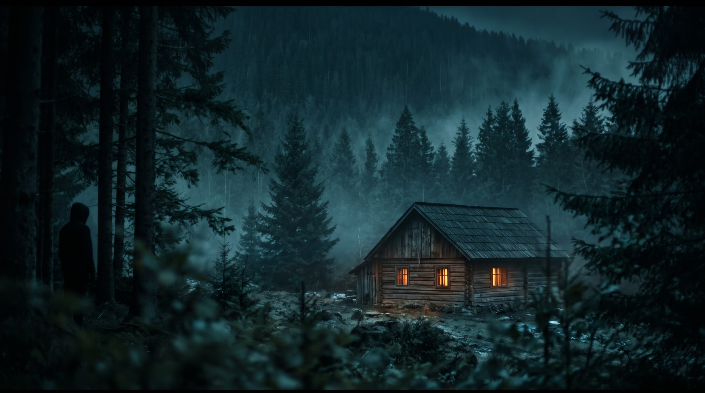
One of us knowsUna dintre noi știeUna di noi sa
For three years, someone kept quiet.Trei ani cineva a tăcut.Per tre anni, qualcuno ha taciuto.
Starring Mădălina Ghenea · Original story by Olivia OdaianuCu Mădălina Ghenea · Poveste originală de Olivia OdaianuCon Mădălina Ghenea · Soggetto originale di Olivia Odaianu
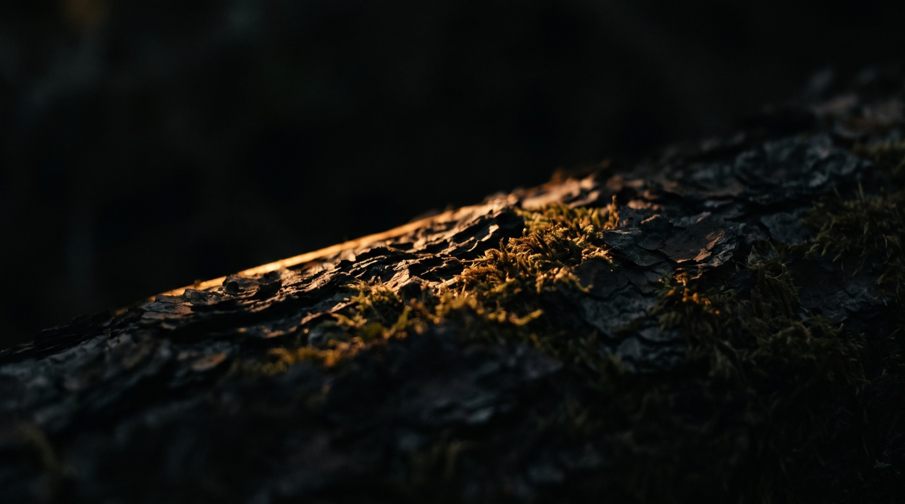
A contained thriller. An international cast.Un thriller cu spațiu închis. O distribuție internațională.Un thriller a porte chiuse. Un cast internazionale.
ConfirmedConfirmatăConfermata
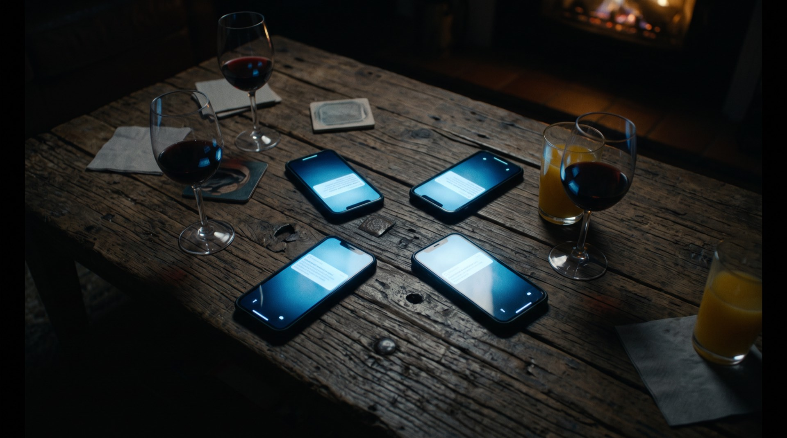
Four friends. Only one is guilty.Patru prietene. O singură vinovată.Quattro amiche. Una sola colpevole.
A bachelorette weekend in a remote cabin in the Romanian Carpathians. An anonymous text: one of them knows what happened three years ago. By tomorrow, they all pay.Un weekend de burlăcițe într-o cabană izolată din Carpații românești. Un mesaj anonim: una dintre ele știe ce s-a întâmplat acum trei ani. Până mâine, toate plătesc.Un addio al nubilato in una baita isolata sui Carpazi romeni. Un messaggio anonimo: una di loro sa cosa è successo tre anni fa. Entro domani, pagheranno tutte.
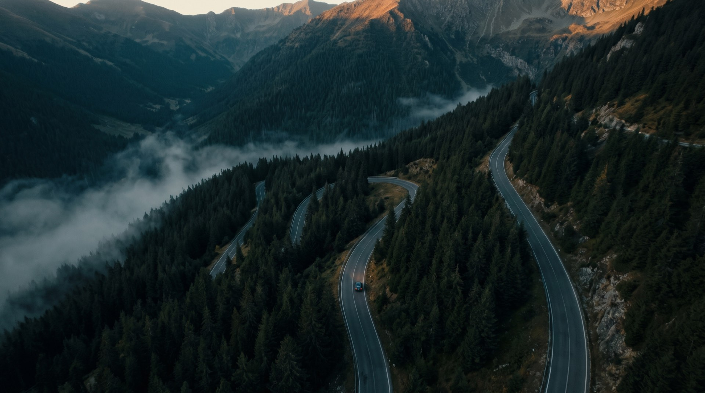
The weekendWeekendulIl weekend
Ioana, a high-school teacher in her forties, is finally getting married. To celebrate, she takes her three closest friends to an isolated cabin in the Făgăraș Mountains: Sonia, an ER doctor who no longer drinks; Ingrid, an army officer who never travels without her gun; and Vera, an interior designer raising her son alone.Ioana, profesoară de liceu trecută de 40 de ani, se mărită în sfârșit. Ca să sărbătorească, își ia cele trei prietene apropiate într-o cabană izolată din munții Făgăraș: Sonia, medic de urgență care nu mai bea; Ingrid, ofițer în armată care nu pleacă nicăieri fără pistol; și Vera, designer de interior care își crește singură băiatul.Ioana, insegnante di liceo sulla quarantina, finalmente si sposa. Per festeggiare porta le sue tre amiche più care in una baita isolata sui monti Făgăraș: Sonia, medico del pronto soccorso che non beve più; Ingrid, ufficiale dell'esercito che non viaggia mai senza la pistola; e Vera, interior designer che cresce il figlio da sola.
They have known each other for only a year, yet it feels like a lifetime.Se cunosc de doar un an, dar parcă se știu de-o viață.Si conoscono da appena un anno, eppure sembra una vita.
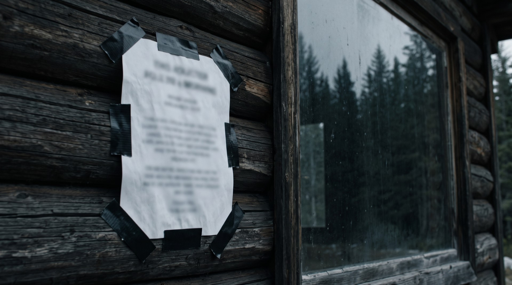
The messageMesajulIl messaggio
That night, all four phones light up at once with the same anonymous text. None of them knows who Liviu Dima is. By morning the phones are gone, the car has vanished, and a white poster is taped to the cabin wall: his name, and a promise that he will finally be heard.În noaptea aceea, toate cele patru telefoane se aprind deodată cu același mesaj anonim. Niciuna nu știe cine e Liviu Dima. Dimineața, telefoanele au dispărut, mașina nu mai e, iar pe peretele cabanei e lipit un afiș alb: numele lui și promisiunea că, în sfârșit, va fi auzit.Quella notte i quattro telefoni si illuminano insieme con lo stesso messaggio anonimo. Nessuna sa chi sia Liviu Dima. Al mattino i telefoni sono spariti, l'auto non c'è più e sul muro della baita è attaccato un manifesto bianco: il suo nome, e la promessa che finalmente verrà ascoltato.
Then Vera has a severe asthma attack. Her inhaler is in the missing car.Apoi Vera face o criză severă de astm. Inhalatorul ei e în mașina dispărută.Poi Vera ha una grave crisi d'asma. Il suo inalatore è nell'auto scomparsa.
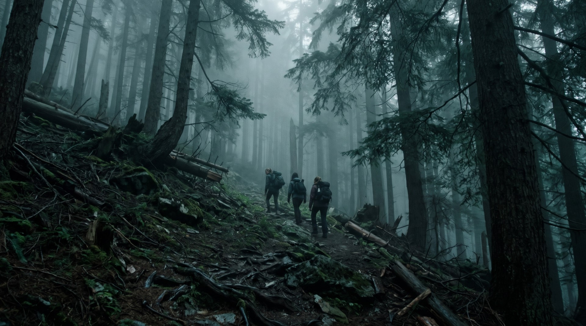
The woodsPădureaIl bosco
With no phones and no car, the survivors set out on foot through the forest, twelve kilometres from the nearest village. Every step strips away another secret. Every confession turns friends into suspects.Fără telefoane și fără mașină, supraviețuitoarele pornesc pe jos prin pădure, la doisprezece kilometri de cel mai apropiat sat. Fiecare pas mai dă jos un secret. Fiecare mărturisire transformă prietenele în suspecte.Senza telefoni né auto, le sopravvissute si incamminano nel bosco, a dodici chilometri dal villaggio più vicino. Ogni passo fa cadere un segreto. Ogni confessione trasforma le amiche in sospettate.
By nightfall, the question is no longer who sent the message, but which of them will make it out of the woods.Până la căderea serii, întrebarea nu mai e cine a trimis mesajul, ci care dintre ele va ieși din pădure.Al calar della sera la domanda non è più chi ha mandato il messaggio, ma chi di loro uscirà dal bosco.
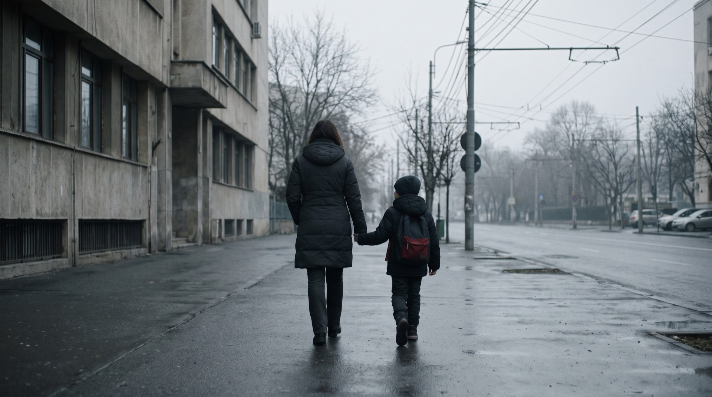
Ioana planned everything.Ioana a plănuit totul.Ioana ha pianificato tutto.
Liviu Dima was her son. Three years ago, drunk and heartbroken after Ingrid humiliated him at a party, he fell into an unfenced pit on Vera's land. Sonia, drinking on her ER shift, missed his internal bleeding. Ioana chose each woman, built the friendship and staged the weekend to hear them confess. She wanted the truth, not their deaths.Liviu Dima era fiul ei. Acum trei ani, beat și cu inima frântă după ce Ingrid l-a umilit la o petrecere, a căzut într-o groapă neîngrădită de pe terenul Verei. Sonia, care bea în gardă la Urgențe, nu i-a văzut hemoragia internă. Ioana le-a ales pe fiecare, a construit prietenia și a pus la cale weekendul ca să le audă mărturisind. Voia adevărul, nu moartea lor.Liviu Dima era suo figlio. Tre anni fa, ubriaco e con il cuore spezzato dopo che Ingrid lo aveva umiliato a una festa, è caduto in una fossa non recintata sul terreno di Vera. Sonia, che beveva durante il turno al pronto soccorso, non si è accorta della sua emorragia interna. Ioana ha scelto ognuna di loro, ha costruito l'amicizia e ha organizzato il weekend per sentirle confessare. Voleva la verità, non la loro morte.
The weekend spirals. Vera dies without her inhaler. Sonia is stabbed in a struggle. Ingrid shoots Tudor, Ioana's fiancé, then falls to her death. The case is closed as a chain of accidents.Weekendul scapă de sub control. Vera moare fără inhalator. Sonia e înjunghiată într-o încăierare. Ingrid îl împușcă pe Tudor, logodnicul Ioanei, apoi cade în râpă. Cazul se închide ca un șir de accidente.Il weekend precipita. Vera muore senza inalatore. Sonia viene accoltellata in una colluttazione. Ingrid spara a Tudor, il fidanzato di Ioana, poi precipita in un burrone. Il caso viene archiviato come una serie di incidenti.
One year later, Ioana adopts Vera's son, Darius.Un an mai târziu, Ioana îl adoptă pe Darius, fiul Verei.Un anno dopo, Ioana adotta Darius, il figlio di Vera.
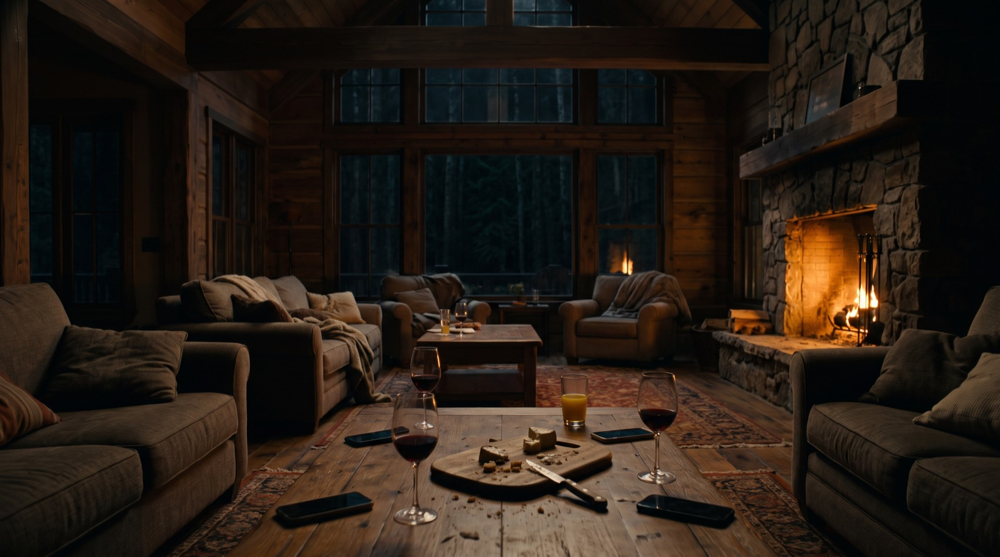
An Agatha Christie puzzle, played at the speed of grief.Un puzzle Agatha Christie, jucat în ritmul doliului.Un enigma alla Agatha Christie, al ritmo del lutto.
A closed circle, a ticking clock and a culprit nobody can name. But here every death is an accident, and that is the horror. Nobody in this story is a monster. Everyone is guilty of looking away.Un cerc închis, un ceas care ticăie și un vinovat pe care nu-l poate numi nimeni. Dar aici fiecare moarte e un accident, și asta e oroarea. În povestea asta nu există monștri. Toate sunt vinovate că au întors privirea.Un cerchio chiuso, un conto alla rovescia e un colpevole senza nome. Ma qui ogni morte è un incidente, ed è questo l'orrore. In questa storia non ci sono mostri. Tutte sono colpevoli di aver distolto lo sguardo.
Warm inside. Nothing but woods outside.Cald înăuntru. Afară, doar pădure.Caldo dentro. Fuori, solo il bosco.
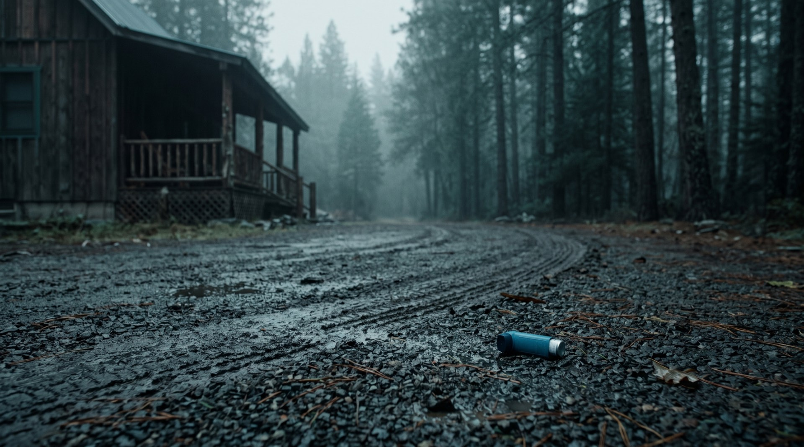
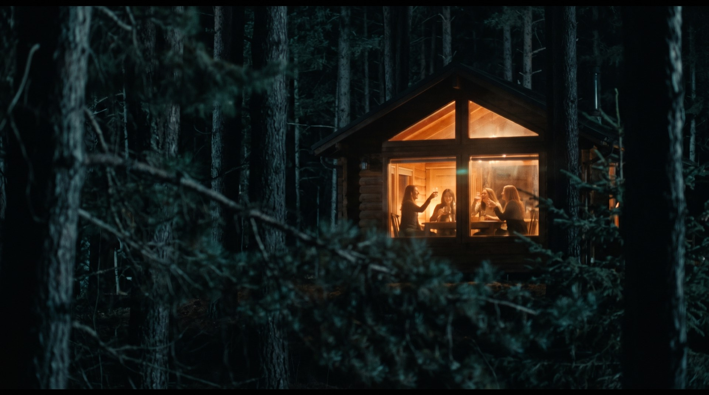
Cold outside. Warm only in the window.Rece afară. Cald doar în geam.Freddo fuori. Caldo solo alla finestra.
Night exteriors in desaturated teal-black; the cabin's amber windows are the only warmth in frame. Long lenses from the treeline make the audience the watcher. Inside, the camera goes handheld and close as the friendship cracks.Exterioare de noapte în negru-verzui desaturat; geamurile chihlimbar ale cabanei sunt singura căldură din cadru. Obiective lungi, de la marginea pădurii, fac din spectator cel care pândește. Înăuntru, camera trece din mână, aproape, pe măsură ce prietenia crapă.Esterni notturni in un nero-verde desaturato; le finestre ambrate della baita sono l'unico calore nell'inquadratura. Lunghe focali dal limite del bosco fanno dello spettatore l'osservatore. Dentro, macchina a mano e primi piani mentre l'amicizia si incrina.
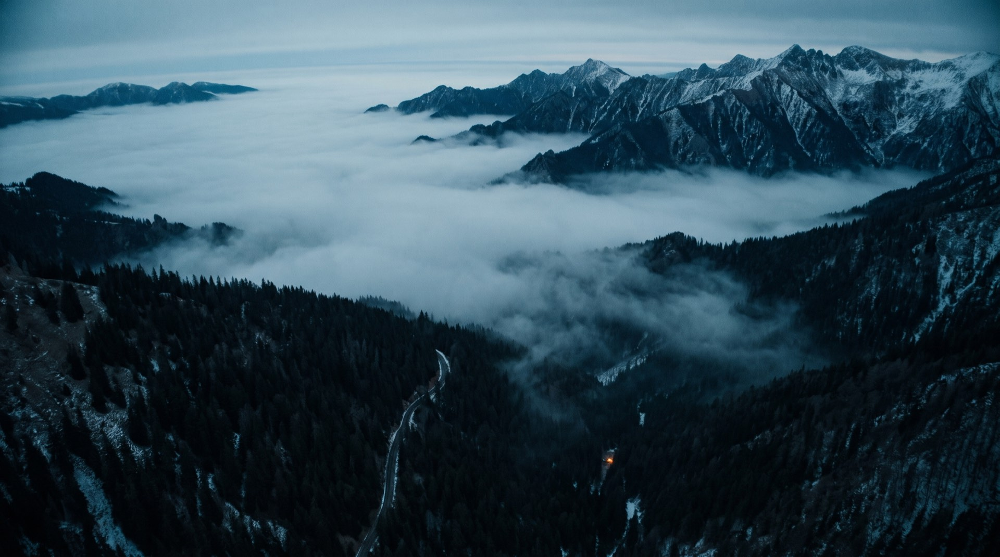
The Făgăraș MountainsMunții FăgărașI monti Făgăraș
Romania's highest range. One road in, no signal, twelve kilometres of forest to the nearest village. Shot in Romania and Italy as a European co-production, around one main location: the cabin.Cel mai înalt lanț muntos din România. Un singur drum, fără semnal, doisprezece kilometri de pădure până la cel mai apropiat sat. Filmat în România și Italia, ca o coproducție europeană, în jurul unei singure locații principale: cabana.La catena più alta della Romania. Una sola strada, niente segnale, dodici chilometri di bosco fino al villaggio più vicino. Girato in Romania e in Italia come coproduzione europea, attorno a una sola location principale: la baita.
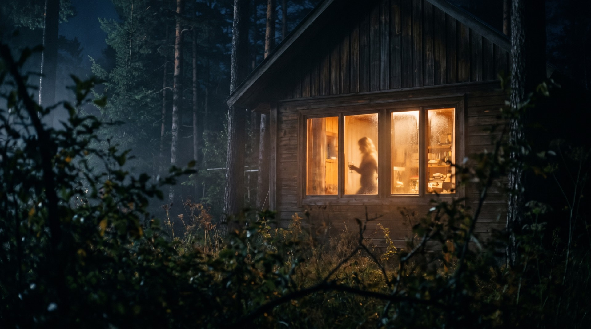
One song, played twice.Un cântec, cântat de două ori.Una canzone, suonata due volte.
“Summer Wine” plays on the first night, when they still laugh. It returns at the end, when there is no one left to laugh. In between: wind, pine and silence.„Summer Wine” se aude în prima seară, când încă râd. Revine la final, când nu mai e nimeni care să râdă. Între ele: vânt, brazi și liniște.“Summer Wine” risuona la prima sera, quando ridono ancora. Ritorna alla fine, quando non resta più nessuno a ridere. In mezzo: vento, pini e silenzio.
Music rights to be cleared.Drepturile muzicale urmează să fie obținute.Diritti musicali da acquisire.
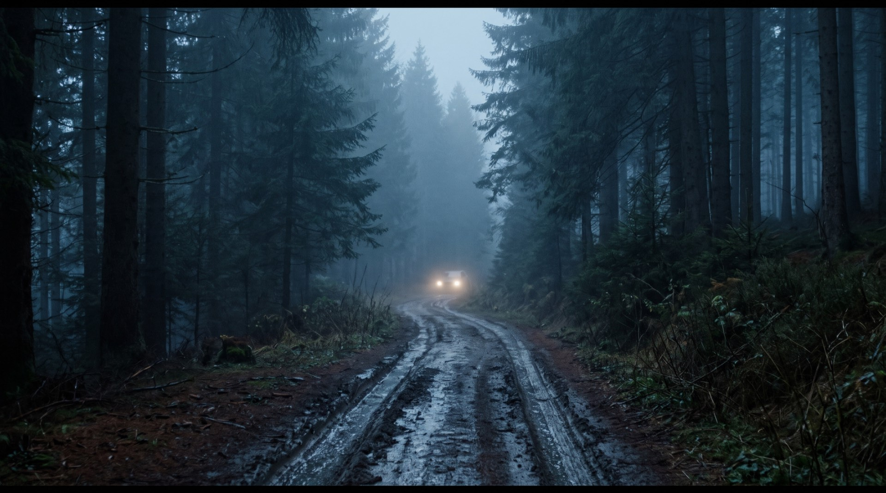
In the company ofÎn companiaIn compagnia di
Women, isolation, and the friendship that breaks first.Femei, izolare și prietenia care cedează prima.Donne, isolamento e l'amicizia che si spezza per prima.
A weekend among friends turns into a game of accusations.Un weekend între prieteni devine un joc al acuzațiilor.Un weekend tra amici diventa un gioco di accuse.
A dinner party where the real threat is the past.O cină la care adevărata amenințare e trecutul.Una cena in cui la vera minaccia è il passato.
Financial comparables available on request.Comparabilele financiare sunt disponibile la cerere.Comparabili finanziari disponibili su richiesta.
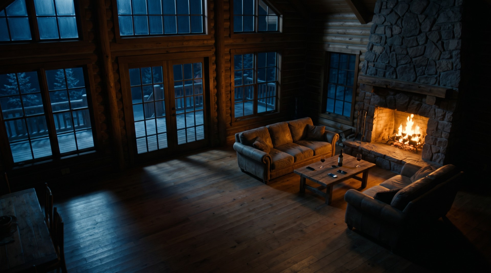
Four women. Four secrets.Patru femei. Patru secrete.Quattro donne. Quattro segreti.
Explore the room.Explorează camera.Esplora la stanza.
Ioana
The teacher. The bride. Over forty, finally happy, and the only one who never says what she was doing three years ago.Profesoara. Mireasa. Trecută de 40 de ani, fericită în sfârșit, și singura care nu spune niciodată ce făcea acum trei ani.L'insegnante. La sposa. Più di quarant'anni, finalmente felice, e l'unica che non dice mai cosa faceva tre anni fa.
Sonia
The doctor. Sober, precise, calm in a crisis. Too calm, the others start to think.Medicul. Trează, precisă, calmă în criză. Prea calmă, încep să creadă celelalte.La dottoressa. Sobria, precisa, calma nelle emergenze. Troppo calma, cominciano a pensare le altre.
Ingrid
The soldier. Ironic, hard, armed. She sees a hooded figure in the trees and tells no one.Militarul. Ironică, dură, înarmată. Vede o siluetă cu glugă printre copaci și nu spune nimănui.La soldatessa. Ironica, dura, armata. Vede una figura incappucciata tra gli alberi e non lo dice a nessuno.
Vera
The mother. Raising Darius alone, forgetting everything except him. She is the first to fall.Mama. Îl crește singură pe Darius și uită orice, în afară de el. E prima care cade.La madre. Cresce Darius da sola e dimentica tutto tranne lui. È la prima a cadere.
Tudor
The fiancé. A lawyer, two hours away, who keeps calling.Logodnicul. Avocat, la două ore distanță, care tot sună.Il fidanzato. Avvocato, a due ore di distanza, continua a chiamare.
Who plays whomCine pe cine joacăChi interpreta chi
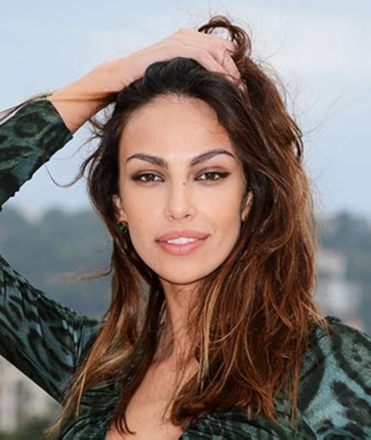
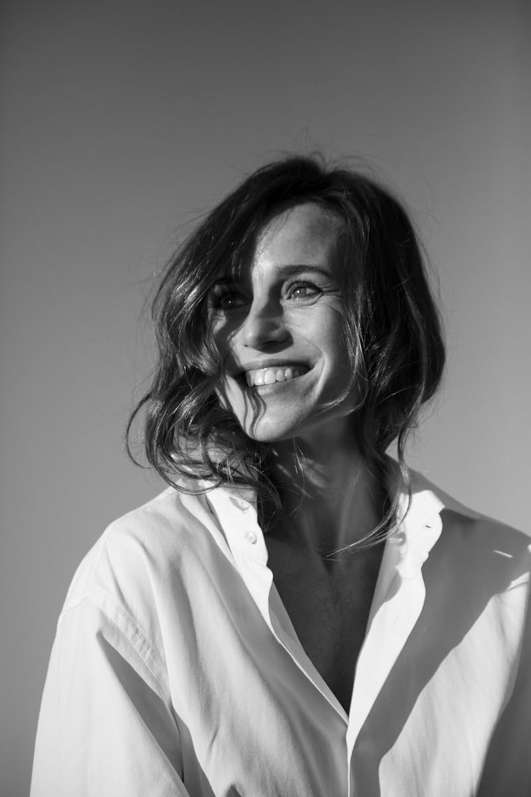
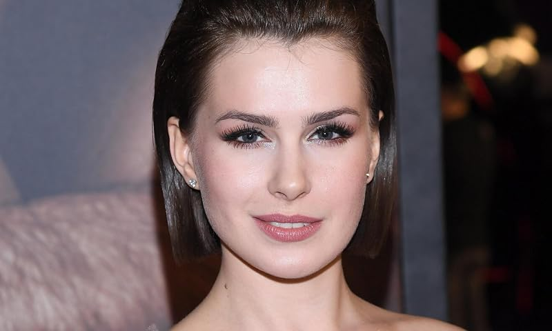
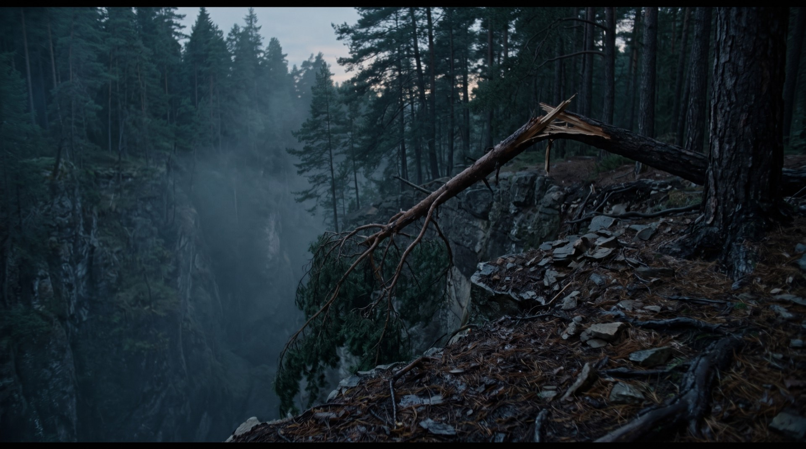
Why this storyDe ce povestea astaPerché questa storia
We all keep one story we never tell. One of Us Knows asks what happens when silence has a body count.Fiecare dintre noi păstrează o poveste pe care n-o spune niciodată. Una dintre noi știe întreabă ce se întâmplă când tăcerea face victime.Tutti custodiamo una storia che non raccontiamo mai. Una di noi sa si chiede cosa succede quando il silenzio fa delle vittime.
It is a thriller about guilt rather than evil: four women who each looked away once, and a mother who could not. We want audiences to leave the cinema arguing about who was to blame, and quietly asking themselves what they have never said.E un thriller despre vinovăție, nu despre rău: patru femei care au întors privirea o dată și o mamă care n-a putut. Vrem ca publicul să iasă din sală certându-se cine e de vină și întrebându-se, în gând, ce n-a spus niciodată.È un thriller sulla colpa, non sul male: quattro donne che una volta hanno distolto lo sguardo, e una madre che non ci è riuscita. Vogliamo che il pubblico esca dalla sala discutendo di chi sia la colpa, e chiedendosi in silenzio cosa non ha mai detto.
Who makes itCine îl faceChi lo realizza
KSM Production
Cluj-Napoca. Two features released in 2026: Acel martie, a thriller shot in Romania and Spain with Esther Acebo and Costas Mandylor, and Dosarele Orașului Alb, a mystery released in cinemas.Cluj-Napoca. Două lungmetraje lansate în 2026: Acel martie, thriller filmat în România și Spania, cu Esther Acebo și Costas Mandylor, și Dosarele Orașului Alb, mystery lansat în cinematografe.Cluj-Napoca. Due lungometraggi usciti nel 2026: Acel martie, thriller girato in Romania e Spagna con Esther Acebo e Costas Mandylor, e Dosarele Orașului Alb, mystery uscito in sala.
Olivia Odaianu
Author of the original screenplay.Autoarea scenariului original.Autrice della sceneggiatura originale.
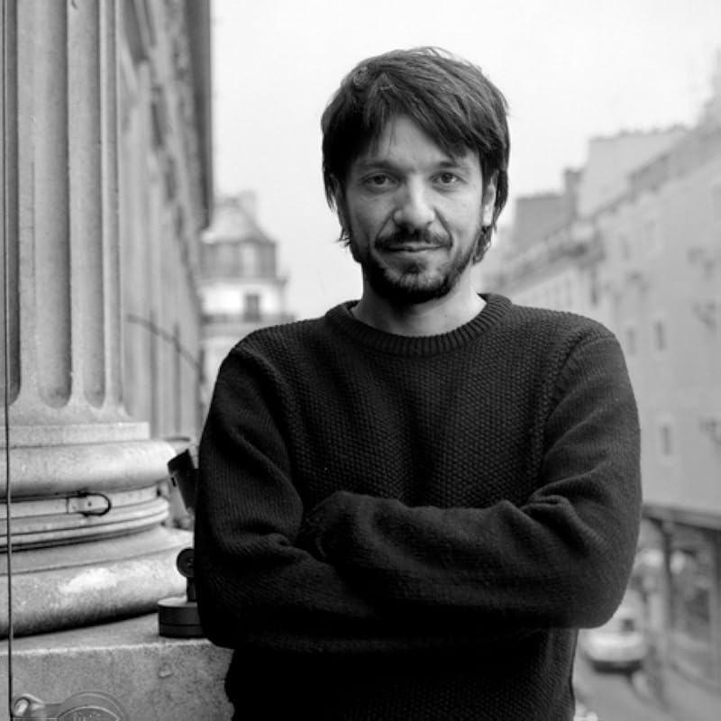
Oriol Paulo
The Invisible Guest, The Body, Mirage; The Innocent (Netflix). His films have been remade in India and Italy.The Invisible Guest, The Body, Mirage; The Innocent (Netflix). Filmele lui au fost refăcute în India și Italia.The Invisible Guest, The Body, Mirage; The Innocent (Netflix). I suoi film sono stati rifatti in India e in Italia (Il testimone invisibile).
Financial plan, waterfall and termsPlan financiar, waterfall și termeniPiano finanziario, waterfall e condizioni
Available on requestDisponibile la cerereDisponibili su richiesta
European co-production · shooting in Romania and ItalyCoproducție europeană · filmare în România și ItaliaCoproduzione europea · riprese in Romania e in Italia
From script to cinemaDe la scenariu la cinemaDalla sceneggiatura alla sala
Dates are set once financing closes. Red marks where we are now.Datele se fixează după închiderea finanțării. Roșul arată unde suntem acum.Le date si fissano alla chiusura del finanziamento. Il rosso indica dove siamo ora.
Built to travelFăcut să circulePensato per viaggiare
- 01Female-led ensemble thrillers travel across borders.Thrillerele de ansamblu cu femei în prim-plan trec granițele.I thriller corali al femminile viaggiano oltre i confini.
- 02An international lead is already confirmed.Rolul principal internațional e deja confirmat.Una protagonista internazionale è già confermata.
- 03A contained production around one main location.O producție concentrată, în jurul unei singure locații principale.Una produzione contenuta, attorno a una sola location principale.
- 04English-language, European cast, made for international sales.În engleză, cu distribuție europeană, gândit pentru vânzări internaționale.In inglese, con cast europeo, pensato per le vendite internazionali.
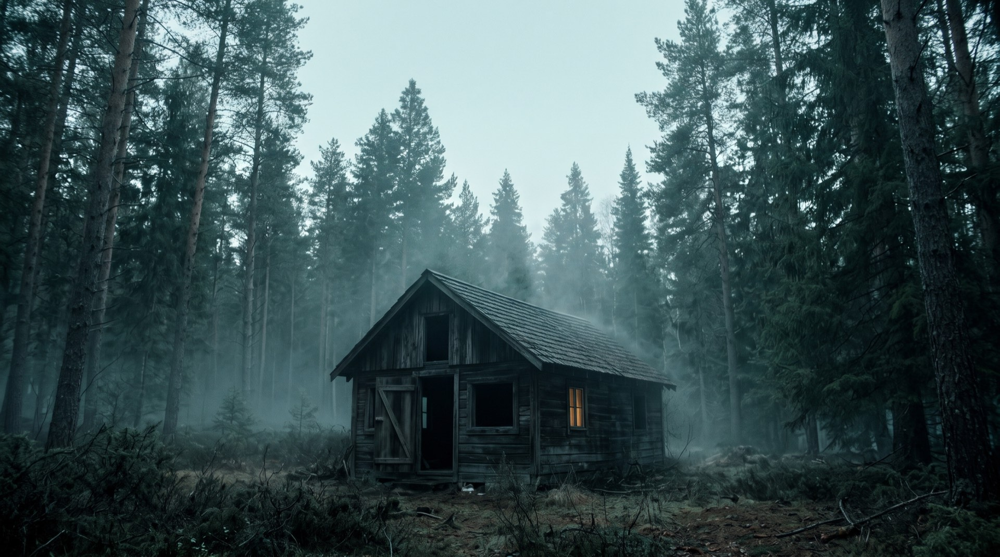
One of us knowsUna dintre noi știeUna di noi sa
KSM Production · Cluj-Napoca
bogdan.marginean@ksmproduction.ro
This presentation is for information only and does not constitute an offer of securities. Names marked “wishlist” are not attached. Forward-looking statements are not guarantees. Cast photos: IMDb, for presentation only. Images: concept frames.Această prezentare are caracter informativ și nu constituie o ofertă de valori mobiliare. Numele marcate „wishlist” nu sunt atașate proiectului. Declarațiile despre viitor nu reprezintă garanții. Fotografiile actorilor: IMDb, doar pentru prezentare. Imaginile: cadre de concept.Questa presentazione ha carattere informativo e non costituisce un'offerta di strumenti finanziari. I nomi indicati come “wishlist” non sono contrattualizzati. Le dichiarazioni previsionali non costituiscono garanzia. Foto del cast: IMDb, solo per presentazione. Immagini: frame di concept.